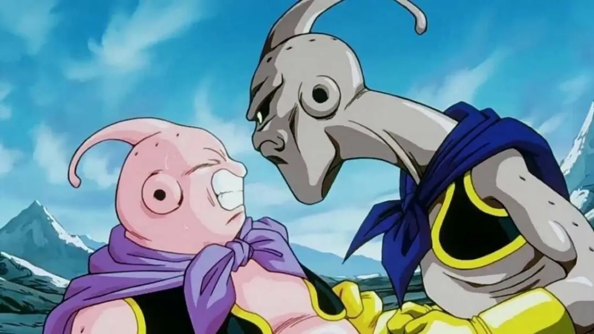
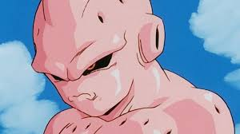
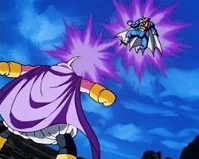

Bueno, aqui dare informacion sobre una de mis razas favoritas, la cual le llama la atencion a muchos, el cual aparte de ser graciosa, puede ser una de las razas mas peligrosas las cuales se han visto en el universo.
Historia de raza
┌─────── ∘°❉°∘ ───────┐
La raza majin según su mismo creador, Akira toriyama, es una raza ancestral, la cual fue creada casi al mismo tiempo que el universo, el cual el supremo kaioshin también hace mención sobre lo ya dicho por unos par de segundos
Todos en un principio creían que esta raza fue creada por el mago bibidi, pero a futuro... Bills mismo habla sobre ellos, y que son unos seres muy antiguos, lo cual esa teoría de la creación del mago, fue descartada. El cual a futuro, siendo solo en su raza, el primer majin de todos (Majin boo), crea como en la historia de Adán y Eva, de una parte de el, crea a la primera mujer majin, la cual la creo como el se la imaginaba, inspirándose un poco de las mujeres terrícolas.
└─────── °∘❉∘° ───────┘
Origen
Como antes ya dicho, el origen de la raza es algo incierta. Solo se sabe que es una de las razas mas antiguas del universo mismo.
Ahora hablando sobre el manga y la serie, hace su primera aparición en el manga en el cap. 232, el cual despierta del mismo método que en el de la serie de anime (reuniendo grandes cantidades de energía)
Habilidades
Esta raza es una de las mas impresionantes en el momento de pelear, ya que se les puede considerar unos genios en ese ámbito.
Ellos están compuestos por células y bioquímicos desconocidos actualmente pero a la vista se ve como una gran bola de goma de mascar (chicle). los cuales mezclados con mucho poder, hacen a este personaje uno de los mas poderosos e indestructibles.
Tambien una de las habilidades la cual lo destaca, es la capacidad de convertir a su contrincante en cualquier clase de caramelo si el lo desea
También cuenta con la habilidad de la absorción, las cuales a parte de alimentarse, aprende las habilidades del individuo (utilizando todo, hasta su inteligencia), haciéndose cada vez mas fuerte


Poseen una regeneración muy avanzada, la cual regenera o une las partes que se le fueron amputadas, también constan de la habilidad de absorber o repeler ataques con gran facilidad, tienen una flexibilidad impresionante, y aparte de ser seres mágicos, nunca se agotan. Aparte de que ellos son capaces de aprender todas las técnicas las cuales requieran Ki, ya que con solo observar, aprenden
Apariencia
como todos sabrán, tiene la apariencia de un ser con un cuerpo amorfo el cual tiene similitud con la goma de mascar, la que es muy resistente, y su forma original va cambiando constantemente, a medida que valla absorbiendo individuos

También una se sus características mas llamativas, es su expulsión de vapor mediante unos orificios los cual se encuentran por todo su cuerpo, y expulsa este cuando demuestra sus sentimientos, como la ira, el nerviosismo, etc.